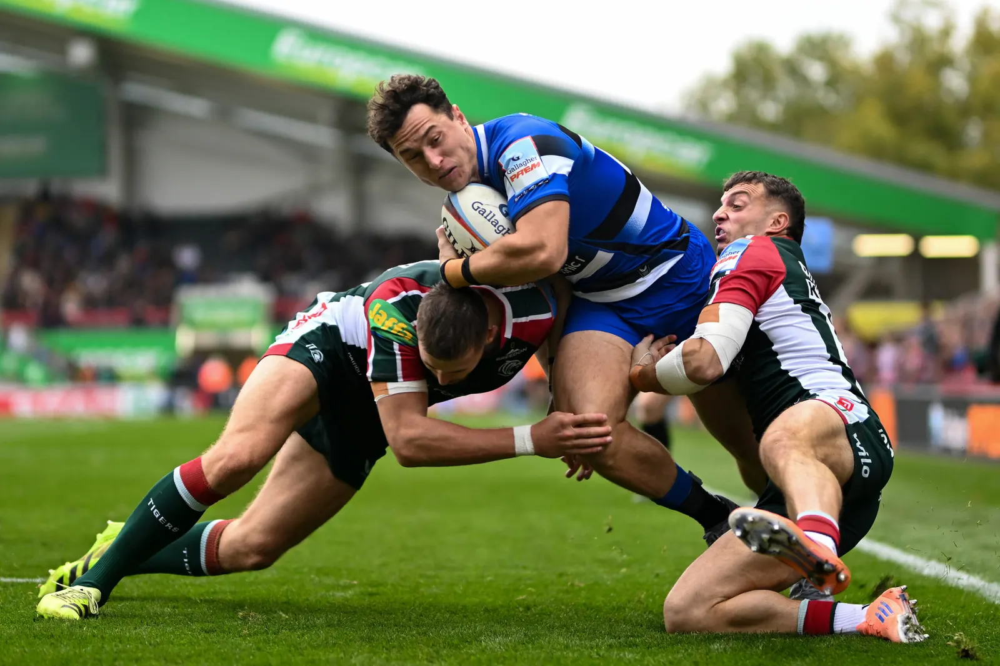
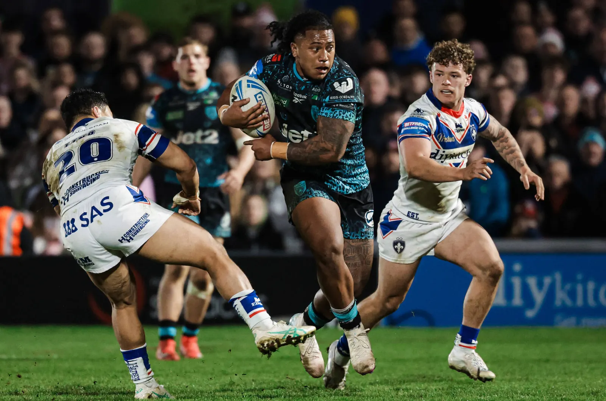

What are the rugby leagues in the UK?
The UK has separate rugby union and rugby league pyramids. Each union nation runs its own leagues: England, Wales, Scotland, and Ireland (which includes Northern Ireland). The professional Welsh, Scottish and Irish teams also play in the cross-border United Rugby Championship. Rugby league is run by the RFL, with Super League at the top.

The quickest way to understand UK rugby leagues is to start with who runs them. Each governing body runs its own pyramid. Clubs move up or down that pyramid through promotion and relegation, or, at the top of English rugby union and in Super League, by meeting entry criteria.
| Nation / code | Governing body | Top men's competition | Next level down |
|---|---|---|---|
| England – rugby union | Rugby Football Union (RFU) | PREM Rugby (10 clubs) | Champ Rugby |
| England – rugby league | Rugby Football League (RFL) | Super League (14 clubs in 2026) | RFL Championship (20 clubs) |
| Wales – rugby union | Welsh Rugby Union (WRU) | United Rugby Championship (Welsh regions) | Super Rygbi Cymru (10 clubs) |
| Scotland – rugby union | Scottish Rugby | United Rugby Championship (Edinburgh, Glasgow Warriors) | Scottish Premiership (10 clubs) |
| Northern Ireland – rugby union | Irish Rugby Football Union (IRFU) | United Rugby Championship (Ulster) | Energia All-Ireland League |
When people search for "rugby leagues", they usually mean one of three things:
- A list of the competitions, such as the table above.
- How the levels fit together, covered section by section below.
- Which league a particular club plays in. Every club in our directory has a profile, and English union clubs show their current league where we could confirm it.
Rugby union leagues vs rugby league: what is the difference?
Rugby union and rugby league are two different sports that split in 1895. Union is played 15-a-side with contested rucks, lineouts and scrums. League is 13-a-side with a six-tackle limit. Each code has its own clubs, competitions and governing body, so a "rugby union league" and "rugby league" mean different things.
The naming causes real confusion. "Rugby league" is the name of a sport. A "rugby union league" is simply a division in the other sport.
| Rugby union | Rugby league | |
|---|---|---|
| Players per side | 15 | 13 |
| Possession | Contested at rucks and mauls | Six tackles, then a turnover |
| Set pieces | Scrums and lineouts | Scrums (uncontested) and play-the-ball |
| England's governing body | RFU | RFL |
| Heartland | Everywhere, especially the South, Midlands, Wales and Scotland | Yorkshire, Lancashire, Greater Manchester, Cumbria |
| Clubs in our directory | 470 | 101 |
Many towns in the North of England have clubs of both codes. Wigan, Warrington, Leeds and Hull, for example, all have rugby union clubs as well as famous rugby league teams. If you want to play, check the club's profile before you go: the Sport field at the top of every directory listing tells you which code it plays.
English rugby union leagues (RFU)
English men's rugby union runs from PREM Rugby at level 1 through Champ Rugby, National League 1 and the three National League 2 divisions. Below those come six Regional 1 leagues, twelve Regional 2 leagues, and county-based Counties leagues from level 7 down. Most community clubs play in Regional or Counties leagues.
| Level | League(s) | Leagues at this level |
|---|---|---|
| 1 | PREM Rugby | 1 |
| 2 | Champ Rugby | 1 |
| 3 | National League 1 | 1 |
| 4 | National League 2 East, North, West | 3 |
| 5 | Regional 1 | 6 |
| 6 | Regional 2 | 12 |
| 7+ | Counties 1, 2, 3 and below | Many, run by the RFU's four divisions |
What changed in 2026-27
The biggest change is at the top. The RFU Council voted in February 2026 to end automatic promotion and relegation between PREM Rugby and Champ Rugby from the 2026-27 season. A Champ club can now join the top flight only through a criteria-based process. That process looks at:
- on-field performance
- finances
- commercial strength
- stadium
- geographical reach
Below the PREM, promotion and relegation still work in the usual way, with automatic places and play-offs.
For a full level-by-level breakdown with promotion rules and old league names, read our English rugby union league structure guide.
Rugby league competitions in England
In 2026, men's professional rugby league in England has two tiers. Super League has 14 clubs, and the RFL Championship has 20 after it merged with League One. Below them, the National Community Rugby League (NCRL) replaced the National Conference League as the top of the amateur game, with regional men's leagues underneath.

Super League
The 14 Super League clubs in 2026 are:
- Bradford Bulls
- Castleford Tigers
- Catalans Dragons
- Huddersfield Giants
- Hull FC
- Hull KR
- Leeds Rhinos
- Leigh Leopards
- St Helens
- Toulouse Olympique
- Wakefield Trinity
- Warrington Wolves
- Wigan Warriors
- York Knights
The league grew from 12 clubs to 14 for 2026. Places are decided by the RFL's club grading system rather than purely by results. For 2026, Bradford, Toulouse and York joined, and Salford dropped into the Championship.
Championship
For 2026 the RFL combined the Championship and League One into a single 20-club second tier. It includes former Super League sides such as Salford Red Devils and London Broncos.
Community game
In 2026 the National Conference League was dissolved and replaced by the National Community Rugby League:
- National Premier League: 12 clubs, including Siddal, Heworth, Thatto Heath Crusaders, West Hull, Wigan St Judes and Castleford Lock Lane.
- National League One sits below it.
- Five National Conferences: Cumbria, North West, Southern, and two Yorkshire divisions.
- Regional men's leagues sit below the National Conferences.
In practice, the amateur clubs are where most people play rugby league. Professional clubs rarely run open-age teams for beginners, so if you want to play, start with your nearest amateur (ARLFC) club. Our rugby league clubs page lists 101 of them.
Rugby leagues in Wales
Welsh rugby union has the professional regions in the United Rugby Championship at the top. Below them is Super Rygbi Cymru, a 10-team semi-professional league that replaced the Welsh Premiership in 2024. Community clubs then play in the Admiral Championship (East and West) and the regional divisions below.
The 10 Super Rygbi Cymru clubs, most now carrying a regional prefix, are:
- Glamorgan Aberavon
- Glamorgan Bridgend Ravens
- Glamorgan Cardiff
- Carmarthen Quins
- Monmouthshire Ebbw Vale
- Llandovery
- Monmouthshire Newport
- Monmouthshire Pontypool
- RGC 1404
- Glamorgan Swansea
Below Super Rygbi Cymru, the Admiral Championship is split into East and West conferences. Under that is Division One, which is split by area: North, East, East Central, West Central and West.
Wales is where our directory is most club-dense outside England. See our Cardiff rugby clubs page, or browse all Welsh clubs.
One thing to know: Welsh club names changed a lot with the creation of Super Rygbi Cymru. Searching for the old name, such as "Cardiff RFC", usually still finds the club.
Rugby leagues in Scotland
Scotland's professional teams, Edinburgh and Glasgow Warriors, play in the United Rugby Championship. The club game is led by the 10-team Scottish Premiership, then National Leagues One to Four (40 clubs). Below those, regional leagues are run by the Caledonia, East and West regions. The semi-professional Super Series ended in 2024.
| Level | Competition | Clubs |
|---|---|---|
| Professional | United Rugby Championship: Edinburgh Rugby, Glasgow Warriors | 2 |
| 1 | Scottish Premiership | 10 |
| 2–5 | National League One to Four | 40 (10 each) |
| 6+ | Regional leagues: Caledonia, East, West | Varies |
The top four in the Premiership play off for the Scottish title. Clubs such as Boroughmuir in Edinburgh and the Borders clubs have long been at this level.
Rugby leagues in Northern Ireland and Ireland
Rugby union in Northern Ireland is run by the IRFU on an all-Ireland basis. Ulster represents the province in the United Rugby Championship. Clubs play in the Energia All-Ireland League. From 2026-27 the lower AIL divisions are reorganised into regional 2B North and 2B South divisions to cut travel.
The men's All-Ireland League runs Division 1A, 1B and 2A. Below those, from 2026-27, come the new regional divisions:
- 2BN (North): clubs north of a line from Dublin to Galway
- 2BS (South): clubs south of that line
Below the AIL, clubs play in provincial leagues. For Northern Ireland, that means the Ulster leagues. See our Ulster Rugby and IRFU profiles for more.
Women's rugby leagues in the UK
Women's rugby has its own pyramid in both codes. In England, Premiership Women's Rugby (PWR) is the top union league, with national and regional women's leagues below it. In rugby league, the RFL runs the Women's Super League. Many community clubs now run a women's team as well as men's and junior sides.
If you are looking for a women's team, the women's league structure matters less than finding a club with a squad near you. Start with our women's rugby clubs guide. It lists clubs with women's sides and explains how to get started.
How to find out which league a rugby club plays in
Look the club up on its governing body's competition site: England Rugby for English union, the WRU, Scottish Rugby or IRFU elsewhere, and the RFL for rugby league. League tables there are official and current. Our directory shows the confirmed league on English union club profiles, with the date we last checked it.
This is the method we used to confirm leagues for our directory. In late October 2026 we checked 321 English club teams this way.
- Find the club's profile in the UK rugby club directory and note its exact name and town.
- Open the governing body's club finder. For English union clubs, our profiles link to the club's England Rugby fixtures page.
- Check the first XV, not the 2nd or 3rd XV. Lower teams often play in separate merit or reserve leagues, which can make a club look lower than it is.
- Check the season. Leagues are reorganised every summer, so a table from last season can be wrong by September.
- Ignore sponsor names when comparing. "Regional 1 Tribute Ale South West" and "Regional 1 South West" are the same league.
Common pitfalls
- Merit leagues are not part of the pyramid. The Essex Merit League and Kent Metropolitan League are separate competitions, often for lower teams. There is no promotion from them into the RFU leagues.
- Old league names still appear online. "South West 1", "London 1" and "Midlands 1" were replaced in 2022. Our league structure guide has a conversion table.
- "Rugby league" in a club name can mislead. Some union clubs sit in towns famous for rugby league, and the other way round. Always check the code.
Where UK clubs actually play: what our directory data shows
Most rugby clubs are community clubs, not professional teams. Of the 267 English union clubs in our directory with a confirmed 2026-27 league, only 11 play in Champ Rugby and 8 in National League 1. The rest play at levels 4 to 7 and below, and 118 of them (44%) are in the Counties leagues.
| Level | Clubs in our directory | Share |
|---|---|---|
| Champ Rugby (level 2) | 11 | 4% |
| National League 1 (level 3) | 8 | 3% |
| National League 2 (level 4) | 25 | 9% |
| Regional 1 (level 5) | 42 | 16% |
| Regional 2 (level 6) | 60 | 22% |
| Counties (level 7 and below) | 118 | 44% |
| Merit or other leagues | 3 | 1% |
This matters if you are choosing a club. A Counties or Regional 2 club usually trains twice a week, runs several adult teams and welcomes beginners. A National League club trains more often and recruits more selectively. Neither is better; they suit different players.
Source: UK Rugby Club Directory. Leagues confirmed from England Rugby team pages on 31 October 2026. Professional PREM clubs are excluded.
Rugby divisions: every level of UK rugby
Rugby divisions are the levels of a league pyramid. English men’s rugby union has 24 leagues at levels 1 to 6, from PREM Rugby down to twelve Regional 2 leagues, with Counties leagues from level 7. Rugby league’s divisions are Super League, the Championship and the NCRL.
Use this list to place any club. If a club’s profile says “Regional 2”, it plays at level 6 of English rugby union; “National Premier League” means the top of community rugby league.
| Level | Rugby union division (England) | Leagues |
|---|---|---|
| 1 | PREM Rugby | 1 (10 clubs) |
| 2 | Champ Rugby | 1 |
| 3 | National League 1 | 1 |
| 4 | National League 2 (East, North, West) | 3 |
| 5 | Regional 1 | 6 |
| 6 | Regional 2 | 12 |
| 7+ | Counties 1, 2, 3 and below | Many, by county |
Rugby league divisions in England run from Super League (14 clubs in 2026) to the 20-club Championship, then the National Community Rugby League, led by the National Premier League. For promotion rules at each level of the union game, see our English rugby union league structure guide.
English rugby leagues: how club rugby in England is organised
English rugby leagues run as two separate pyramids. The RFU runs rugby union from PREM Rugby (level 1) down to Counties leagues at level 7 and below. The RFL runs rugby league from Super League through the Championship to the amateur National Community Rugby League (NCRL). Clubs move up or down on results.
Rugby union leagues in England
In practice, most English club rugby is played well below the professional game. Of the 353 English rugby union clubs in our directory, the large majority play at level 5 or below.
- PREM Rugby (level 1): 10 professional clubs, ring-fenced from 2026-27.
- Champ Rugby (level 2): semi-professional and full-time clubs.
- National League 1, then National League 2 East, North and West (levels 3–4).
- Regional 1 (six leagues) and Regional 2 (12 leagues) (levels 5–6).
- Counties 1, 2, 3 and below (level 7+): the local rugby leagues most community clubs play in.
Rugby league competitions in England
Rugby league is concentrated in the North of England. Super League has 14 clubs in 2026, 12 of them English. Below it, the Championship now has 20 clubs after merging with League One. The amateur game is led by the NCRL, with district leagues underneath.
Watch out: the word "league" means two things in rugby. "Rugby leagues" can mean the competitions in either code, while "rugby league" is the 13-a-side sport itself. If you want a club rather than a competition, see rugby league clubs or rugby union clubs.
How many rugby teams are in the UK leagues?
There are thousands of rugby teams in the UK leagues once second and third teams are counted. Our directory lists 637 rugby clubs: 470 rugby union clubs and 101 rugby league clubs, plus rugby businesses. Most clubs field more than one adult team, so each club can have sides in several UK rugby leagues.
| Nation | Code | Top domestic league | Clubs in our directory |
|---|---|---|---|
| England | Rugby union | PREM Rugby | 353 |
| England | Rugby league | Super League | 96 |
| Wales | Rugby union | Super Rygbi Cymru (pro sides in the URC) | 64 |
| Scotland | Rugby union | Scottish Premiership (pro sides in the URC) | 45 |
| Northern Ireland | Rugby union | All-Ireland League (Ulster in the URC) | 6 |
Counts are clubs held in the UK Rugby Club Directory on 4 November 2026, grouped by the address on each club profile. Wales also has two rugby league clubs in our list, and three French rugby league clubs play in English competitions.
Rugby teams in the UK are not spread evenly. Union clubs are found in almost every town, while rugby league teams cluster in Yorkshire, Lancashire, Greater Manchester, Merseyside and Cumbria. To browse every club, open our full list of UK rugby clubs.
Frequently asked questions
How many rugby leagues are there in the UK?
There is no single number, because each nation and each code runs its own pyramid. English men's rugby union alone has 24 leagues across levels 1 to 6: one each at levels 1 to 3, three at level 4, six at level 5 and twelve at level 6. Below that are many more Counties leagues. Rugby league adds Super League, the Championship and the community leagues.
What is the top rugby league in England?
For rugby union it is PREM Rugby, with 10 clubs. For rugby league it is Super League, with 14 clubs in 2026.
Is there still promotion and relegation in English rugby?
Yes, below the top flight. From 2026-27 there is no automatic promotion from Champ Rugby to PREM Rugby; clubs must meet entry criteria instead. Every level from Champ Rugby downwards still has promotion and relegation, including play-offs.
What happened to League One in rugby league?
It merged with the Championship for the 2026 season, creating a single 20-club second tier below Super League.
Which rugby league should a beginner join?
Not a league as such, but a club. Look for a community club at Counties level (union) or an amateur ARLFC (league) near you. Our find a club page lists 637 clubs.
What are the rugby leagues in England?
In rugby union, England’s leagues are PREM Rugby, Champ Rugby, National League 1, the three National League 2 divisions, then Regional 1, Regional 2 and the Counties leagues. In rugby league, they are Super League, the Championship and the National Community Rugby League.
What are the main rugby leagues in England?
For rugby union, the main English rugby leagues are PREM Rugby, Champ Rugby, National League 1 and National League 2, with Regional and Counties leagues below. For rugby league, they are Super League, the Championship and the amateur NCRL.
What is club rugby?
Club rugby is rugby played by clubs rather than national teams. In the UK it ranges from professional clubs in PREM Rugby and Super League to amateur community clubs in local rugby leagues.
Sources and further reading
Is Your Club Missing?
We add clubs every week. If your club is not listed, register it for free so players searching near you can find it.
Register Your Club Free